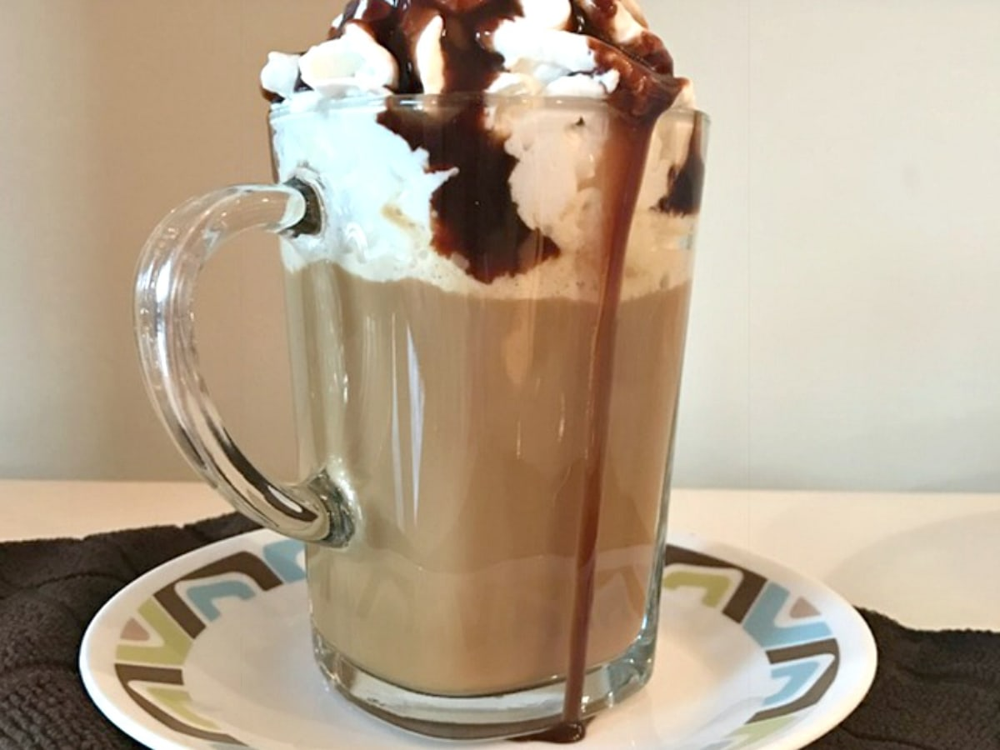
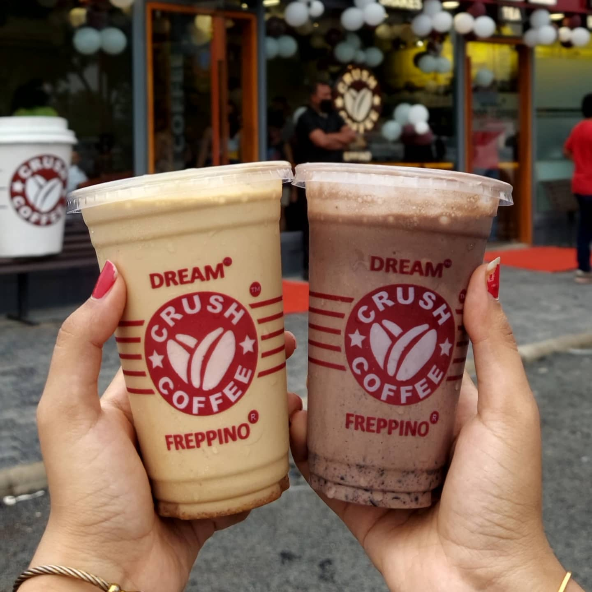

IT's not just Coffee
It's The Crush Coffee to Go
True love these days can be found in a lot of creative places—online, at a bar, or the old-fashioned way, on a blind date. But to a true coffee lover, the relationship they want and need is found every morning (noon and night, sometimes!) at the bottom of their favorite mug. Black, cream, sugar, foam, no foam, these preferences could easily divide nations, it seems, because people LOVE their coffee a certain and often will not budge on changing it. Growing up in Seattle, where Starbucks is the Mothership, and craft coffee shops are found on every corner, I grew up thinking coffee and coffee culture was a normal way of life. But for many people, coffee is just what gets you going in the morning.
Learn More- 
- 